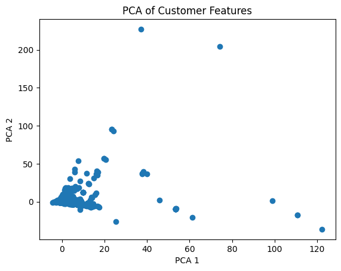
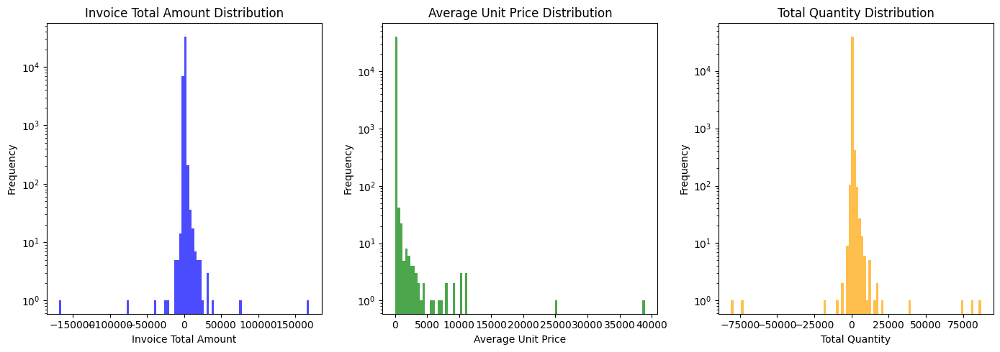
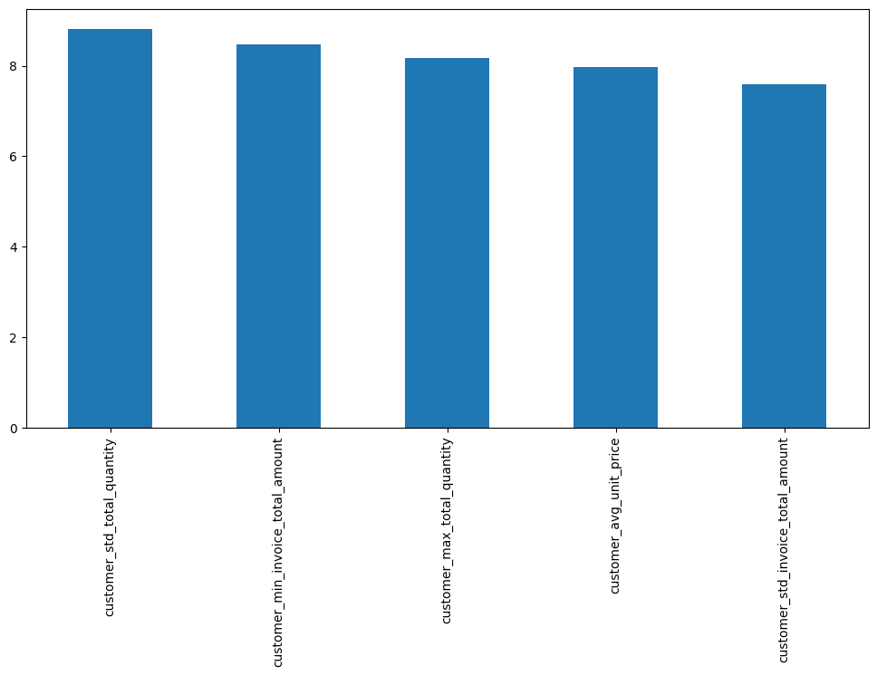
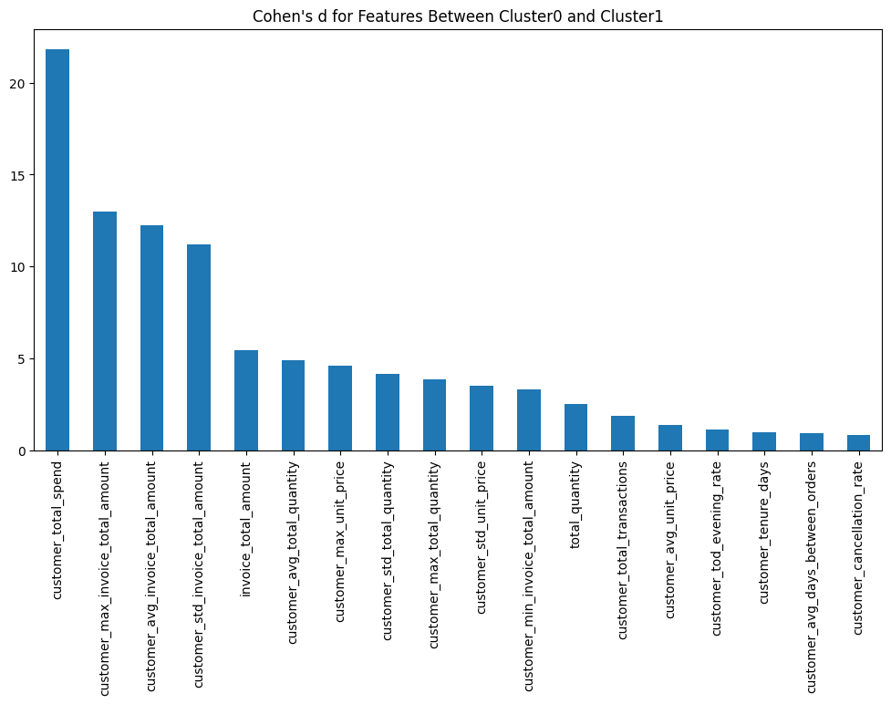
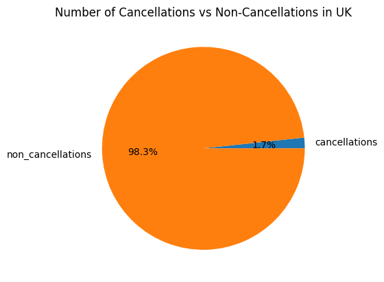

Abstract
This project investigates unusual customer purchasing behavior in UK online retail transactions. Using an invoice-level dataset that combines each transaction's own features with aggregated customer-level behavior, I discover and characterize behavioral segments, then identify the transactions and customers that do not fit well into any of them — without assuming in advance what “normal” shopping looks like. Cancellation behavior and order total are treated as the main axes of interest. This is not a predictive-modelling exercise, and clustering itself is a means to that end rather than the goal.
1. Introduction
Understanding unusual customer behavior has significant commercial value: it may help businesses identify high-value customers, customer segments associated with frequent cancellations, and emerging changes in purchasing patterns, supporting retention, marketing, and operational decision-making.
The dataset used for this project is online_retail_II.csv from Kaggle: a transaction-level log of online retail orders spanning December 2009 to December 2011, with roughly 1.07 million line-item rows across 43 countries. I will use only UK-related transactions, because they constitute 94.7% of all transactions; there are dozens of other countries, but the data outside the UK is insufficient to draw safe inferences about them.
About a quarter of the UK rows have no associated Customer ID — these are guest/unregistered purchases, and they are dropped, since customer-level behavior cannot be attributed to them. After restricting to UK transactions with a known customer, roughly 741,000 transaction rows remain, aggregating to about 40,500 invoices from roughly 5,400 distinct customers.
The unit of analysis is the individual invoice, described by both transaction-level features and aggregated customer-level features. A customer may therefore contribute typical invoices to a segment while a few of their extreme invoices are flagged as outliers — their routine behavior clusters normally, while individual atypical transactions stand apart.
In this work I will not try to build a regression model to assess the chance of a customer cancelling an order, or to predict the shopping basket for a given customer, nor merely to split transactions into clusters as an end in itself.
In this project I want to discover and characterize behavioral segments, then identify transactions and customers that do not fit well into any segment, without predefined knowledge of what is “normal” shopping, and trace those outliers back to the customers who produced them. I recognize cancellation behaviour and order total as the main axes of interest. For instance, if we discover 3 well-defined clusters, we will try to answer the question: “Which transactions and customers do not fit any of those groups?”
2. Related Work
How this work differs from the existing work:
There is plenty of work related to retail data. It can largely be divided into three main categories: customer segmentation, prediction tasks (e.g., customer churn, likelihood of cancellation), and recommendation systems.
I chose to do something distinct – something with a deeper affinity to the “Data Mining” discipline itself: intentionally avoiding pure classification, regression, and clustering as an end goal, and instead focusing on discovering unknown patterns and analyzing the data.
3. Proposed Work
In order to fulfill the objective, my plan is to build the analysis dataset in two stages. First, I will filter out non-UK transactions and guest transactions (those without a Customer ID). Then I will construct a customer-level table of engineered features derived from the available data:
I will then join this customer-level feature table back onto the invoice-level records, so that each invoice is described by both its own transaction-level features and its customer's aggregated behavior. This joined, invoice-level dataset is the unit of analysis for clustering and outlier detection.
Note on feasibility: one may ask whether there is enough data. As a rough estimate, the number of engineered features is ~50, spread across roughly 40,500 invoices from approximately 5,400 identifiable customers. Given this feature space and sample size, the data appears sufficient for clustering and outlier analysis.
Once the dataset is prepared, we will first explore segmentation using the engineered behavioral features. The resulting groups will be used to characterize common patterns of behavior. We will then identify transactions and customers whose behavior differs significantly from the majority or from the identified segments. Particular attention will be given to spending, purchase composition, and cancellation behavior.
4. Evaluation
4.1 Evaluation of Clustering
We will build a baseline clustering model using KMeans, and use DBSCAN as the working model. For both KMeans and DBSCAN, two distance metrics will be employed: euclidean and cosine. The planned number of engineered features is ~50. It is hard to predict upfront whether euclidean or cosine distance will yield better clustering, so both will be evaluated.
Note on cosine distance: DBSCAN natively supports cosine as a distance metric. KMeans does not – “cosine KMeans” is approximated by L2-normalizing the feature vectors first and then running standard (euclidean) KMeans on the unit vectors, since euclidean distance between unit vectors ranks the same as cosine distance.
Clustering will be evaluated by silhouette score, stability of the clustering, and interpretability of the obtained clusters and outliers. Important to understand: silhouette score alone is not supposed to define the model; it is only used in conjunction with the parameters mentioned above. Silhouette score measures how well each data point fits into its assigned cluster compared to other clusters. For our research it can mark the direction of optimization, not the best model. As a strategy, we are looking for a clustering that:
The KMeans baseline model is not expected to perform best – we will use it as a “quick and cheap” way to do a brief clustering and just obtain a first impression of how the data converges into clusters. It's worth mentioning that this algorithm can't serve our research on its own – it does not produce outliers, each point is assigned to a cluster.
DBSCAN, in contrast, can produce outliers, and is expected to serve as the “working horse” of our research.
4.2 Evaluation of Dis-similarity
After obtaining clusters and outliers we have to interpret the results – answer the question “how does cluster A differ from cluster B?”, and/or “how are outliers different from inliers?”. In order to do that, we will compare the two datasets feature by feature, and take the most “different” ones – this will define the answer. But how do we assess how different dataset A and dataset B are for a given feature, compared to another feature? We can look at abs(meanA(feature) − meanB(feature)), but absolute numbers alone won't tell us the “size” of how different they are.
If the feature is annual sum of invoices, this mean difference might be of the magnitude of hundreds, and at the same time it could represent only a small difference relative to that feature's natural spread. At the same time, another feature might be percentage of cancelled transactions – then the mean difference might be less than 1, and at the same time signify a big difference between populations.
In order to compare “how different” the two datasets are across features measured on very different scales, we will use Cohen's d.
In order to interpret the outliers and clusters, we will take the top 5–10 features with a Cohen's d greater than 0.8 – those will define the population.
5. Timeline
6. Discussion
As a first diagnostic, I fitted PCA to retain 95% of variance and inspected the first two principal components (below). They explain only about 25% of total variance, so there is no simple low-dimensional shortcut to a cluster structure – clustering had to work in the full engineered feature space.

For the baseline KMeans model, I evaluated both a euclidean distance on standardized features and a cosine-oriented variant (features L2-normalized, then euclidean KMeans on the unit vectors, since euclidean ranking on unit vectors matches cosine ranking). The euclidean version was clearly stronger – best k=3 with silhouette 0.486, versus best k=5 with silhouette 0.161 for the cosine version – so the cosine path was dropped from further analysis.
For DBSCAN, eps and min_samples were swept systematically using k-distance plots and stability sweeps. min_samples=23 marks the start of a region where the silhouette score and noise-point count stop changing sharply as the parameter increases; eps=9.0 was then chosen within that stable region, at the point giving the best silhouette score and an interpretable number of noise points. A cosine-metric DBSCAN variant was also tried, but proved unstable – silhouette scores went negative and the noise-point count ranged from 0 to over 33,000 across the swept eps values – so it, too, was dropped in favor of the euclidean configuration.
The locked model (euclidean, eps=9.0, min_samples=23) produced 2 clusters, 134 noise points (outliers), and a silhouette score of 0.65. These 134 outlier invoices trace back to only 41 distinct customers, and only 13 of those 41 customers also appear in the main clusters – meaning most outlier customers form a genuinely separate population, rather than being otherwise-typical customers with an occasional unusual invoice.
An early hint of this pattern actually appeared during feature engineering, well before any clustering: the distribution of invoice totals, unit prices, and quantities (below) showed a long tail of very large order quantities (25,000+ items on some invoices), suggesting a mix of ordinary shoppers and business/reseller accounts.

To characterize the outliers, I computed Cohen's d between the outlier invoices and the combined clusters, across every feature. The top five features by effect size (below) are dominated by measures of variability – customer_std_total_quantity, customer_min_invoice_total_amount, customer_max_total_quantity, customer_avg_unit_price, and customer_std_invoice_total_amount – plus one clear cancellation signal (an extreme negative minimum invoice total). Together, these point to a label of high-volume, high-volatility wholesale transactions.

The same approach applied to Cluster 0 vs. Cluster 1 tells a simpler story: a single feature, customer_total_spend, dominates the difference – about 20 standard deviations apart, with correlated features like customer_max_invoice_total_amount following behind. Cluster 0 averages 13,158 in total spend, versus 598,215 for Cluster 1, so Cluster 1 is best labeled high total spend.

Finally, cancellations remain rare in absolute terms – only 1.7% of UK transactions in this dataset – but they show up disproportionately among the outliers, consistent with treating cancellation behavior as one of the two axes of interest defined at the outset.

7. Conclusion
DBSCAN flagged 134 invoices from 41 customers as outliers, falling into two recognizable profiles: high-volume wholesale accounts, and high-value cancellation/adjustment records. The distinguishing features were customer_std_total_quantity, customer_min_invoice_total_amount, customer_max_total_quantity, customer_avg_unit_price, and customer_std_invoice_total_amount. Notably, these outlier customers mostly do not have normal invoices in the main clusters – they are a separate population, not occasional exceptions within an otherwise-typical customer base. A meaningful 2-cluster split also emerged among the non-outlier invoices, driven almost entirely by total spend.
This directly answers the question posed in the introduction: unusual purchasing behavior in this dataset is concentrated in a small, identifiable set of customers, rather than being scattered noise across otherwise-ordinary shoppers. That distinction – a separate population versus scattered noise – is the main deliverable of this project, and it is exactly the kind of insight that supports the retention, marketing, and operational decisions described in the introduction's discussion of business value.
8. Future Work
8.1 Temporal Pattern Analysis
A valuable extension to this work would be to research patterns along a temporal axis:
The ability to interpret these changes could potentially be valuable – for example, to support governance at a state level: ministries of trade, interior, health, etc. could predict explosive demand for certain items and use that knowledge to mitigate shortages.
This kind of research would require significant effort, and may not be achievable with our dataset. Problems include:
9. References